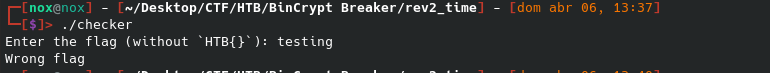
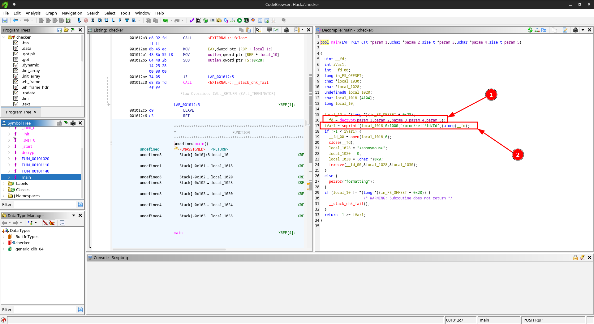
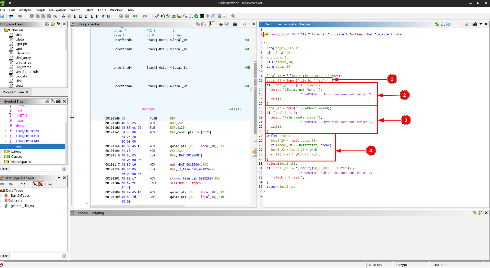
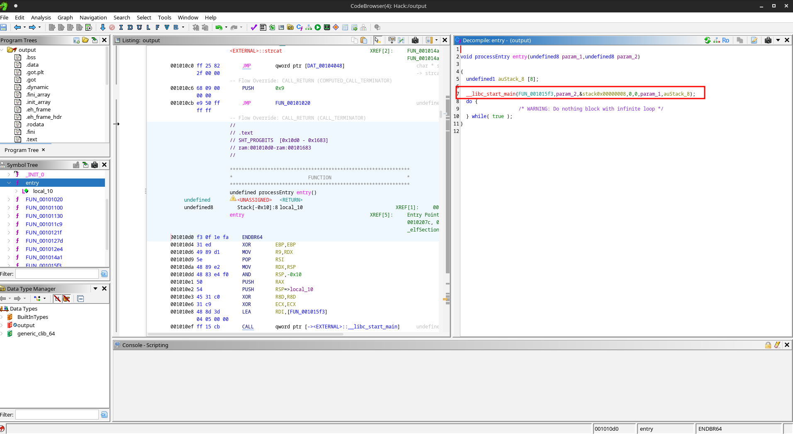
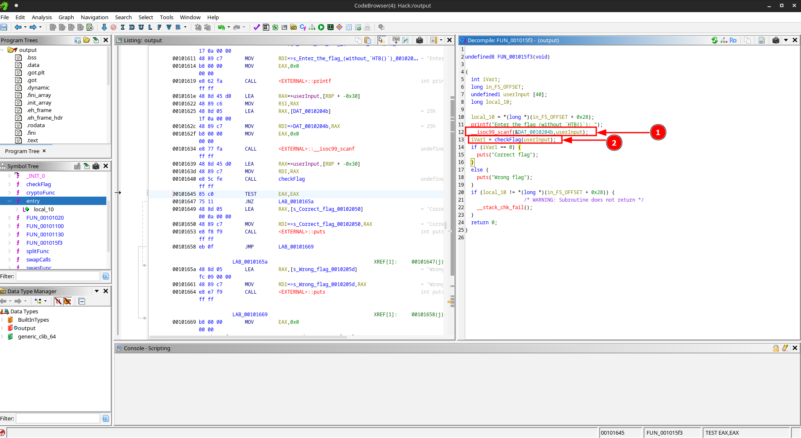
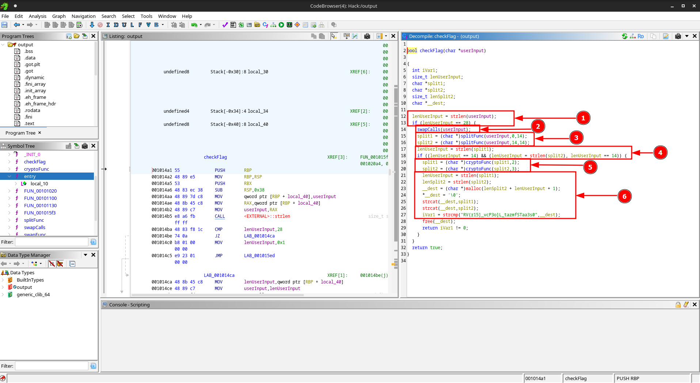
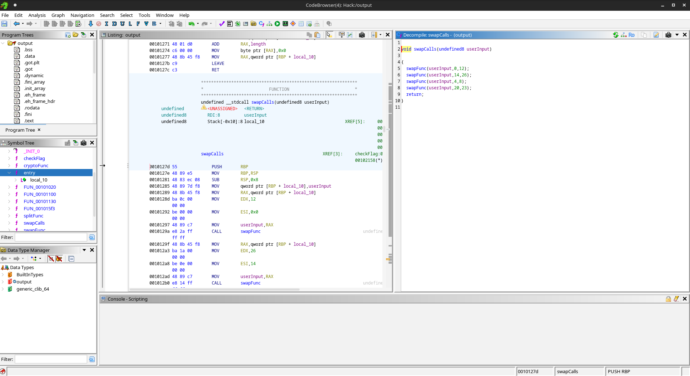
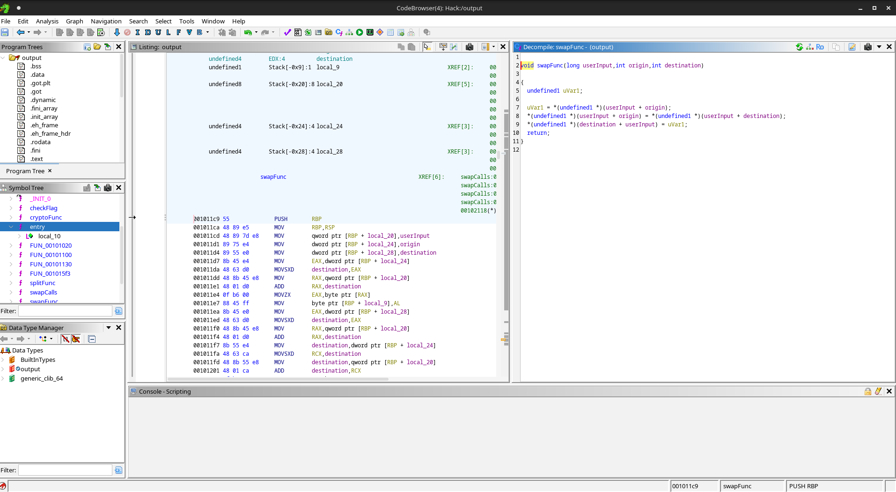
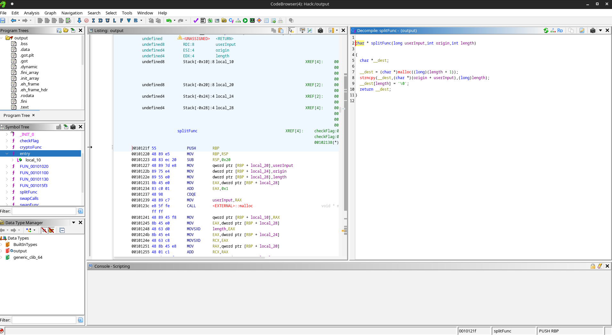
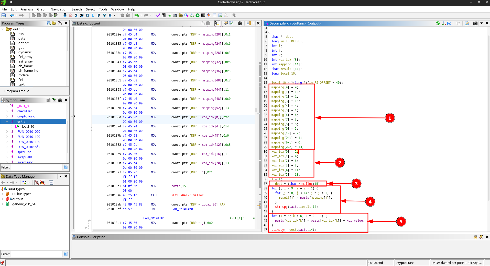

▓█████▄ ▓██ ██▓ ██████ ▄▄▄█████▓ ▒█████ ██▓███ ██▓ ▄▄▄ ███▄ █ ▒██ █▌ ▒██ ██▒▒ ██ ▒ ▓ ██▒ ▓▒ ▒██▒ ██▒ ▓██░ ██ ▒▓██▒▒ ████▄ ██ ▀█ █ ░██ █▌ ▒██ ██░ ▓██▄ ▒ ▓██░ ▒░ ▒██░ ██▒ ▓██░ ██▓ ▒▒██▒▒ ██ ▀█▄ ▓██ ▀█ ██▒ ░▓█ █▌ ░ ▐██▓░ ▒ ██▒ ░ ▓██ ░ ▒██ ██░ ▒██▄█▓▒ ▒░██░░ ██▄▄▄▄██ ██ ▐▌██▒ ░█████▓ ░ ██▒░ ██████▒▒ ▒██▒ ░ ░ ████▓▒░ ▒██▒ ░ ░░██░ ▓█ ▓██ ▒██░ ▓██░ ▒▒▓ ▒ ██▒▒ ▒ ▒▓▒ ▒ ░ ▒ ░░ ░ ▒ ▒░ ░ ▒ ▓██ ░░▓ ▒▒ ▓▒█░ ░ ▒░ ▒ ▒ ░ ▒ ▒ ▓██ ░ ░ ░ ░▒ ░ ░ ░ ░ ░ ▒ ▒░ ░ ▒ ░ ▒ ░ ▒ ▒▒ ░ ░ ░░ ░ ▒░ ░ ░ ░ ▒ ▒ ░ ░ ░ ░ ░ ░ ░ ░ ▒ ░ ░ ▒ ░ ░ ▒ ░ ░ ░
O desafio nos fornece dois arquivos:
Ao executar o binário checker, ele solicita uma flag para verificar sua validade:
Ao abrir o checker no Ghidra, observamos sua função main:
Dois pontos chamam atenção:
A decrypt:
1. Abre o file.bin em modo leitura binária
2. Verifica a existência do arquivo, saindo com erro caso não exista
3. Abre o diretório atual com permissões 0755
4. Faz um XOR byte a byte do conteúdo com o valor 0xAB (171)
5. Com base nisso, podemos descriptografar o arquivo de duas maneiras.
with open('file.bin', 'rb') as file, open('output', 'wb') as output:
for line in file:
for byte in line:
xor = byte ^ 0xab
output.write(bytes([xor]))
Esse script gera o arquivo output, que é o conteúdo original de file.bin.
Podemos acessar o conteúdo descriptografado diretamente da memória do processo:
./checker & <-- Executa o checker em background
ps aux <-- Identifica o processo (geralmente com nome "<anonymous>")
cd /proc/<PID>/fd
ls -l <-- Identifica os arquivos abertos pelo processo
cp 3 decrypt_memory <-- Copia o descritor 3, que corresponde ao arquivo aberto
Comparando os arquivos:
sha256sum decrypt_memory output
-> Ambos possuem o mesmo hash:
-> 6240347c2002448bfe54d42c955e4898dce156bc8738766dab9e0e1bc7497dd5
Após a descriptografia, temos outro ELF. A análise mostra que este novo binário também possui uma função de verificação de flag:
Renomeei as funções para facilitar a análise:
A flag é processada pela função checkFlag.
A função checkFlag faz o seguinte:
1. Verifica se a flag possui 28 caracteres
2. Chama swapCalls para embaralhar posições
3. Divide a flag em duas partes de 14 bytes (splitFunc)
4. Aplica uma transformação criptográfica (cryptoFunc) em cada parte
5. Compara o resultado final com a string:
RV{r15]_vcP3o]L_tazmfSTaa3s0
-> swapCalls
Chama múltiplas vezes a função swapFunc:
-> swapFunc
Realiza um swap básico entre dois índices:
Representação mais legível:
uVar1 = userInput[origin];
userInput[origin] = userInput[destination];
destination[userInput] = uVar1;
As chamadas realizadas são:
0 <-> 12
14 <-> 26
4 <-> 8
20 <-> 23
-> splitFunc
Divide a flag em duas metades de 14 caracteres cada.
-> cryptoFunc
Processo criptográfico:
1. Aplica um mapeamento de permutação nos caracteres (8 vezes)
2. Realiza XOR em índices específicos (2, 4, 6, 8, 11, 13)
Abaixo está o script Python que reverte a criptografia aplicada:
flag_enc = 'RV{r15]_vcP3o]L_tazmfSTaa3s0'
part1 = flag_enc[:14]
part2 = flag_enc[14:]
def xor(part, value):
modified = list(part)
xor_idx = [2, 4, 6, 8, 11, 13]
for i in range(14):
if i in xor_idx:
modified[i] = chr(ord(part[i]) ^ value)
return "".join(modified)
def reverseMap(part):
mapping = [9, 12, 2, 10, 4, 1, 6, 3, 8, 5, 7, 11, 0, 13]
inverse = [0] * len(mapping)
for i in range(len(mapping)):
origin = mapping[i]
inverse[origin] = i
text = part
for _ in range(8):
new_text = [text[inverse[j]] for j in range(14)]
text = ''.join(new_text)
return text
def swapFunc(flag):
flag = list(flag)
origin = [0, 14, 4, 20]
to = [12, 26, 8, 23]
for x, y in zip(origin, to):
flag[x], flag[y] = flag[y], flag[x]
print(f'Flag: HTB{{{''.join(flag)}}}')
# Processo de reversão
pos_reverse1 = reverseMap(part1)
xor_1 = xor(pos_reverse1, 2)
pos_reverse2 = reverseMap(part2)
xor_2 = xor(pos_reverse2, 3)
flag = xor_1 + xor_2
swapFunc(flag)
Esse desafio foi útil pra treinar várias coisas importantes de reversing:
1. Trabalhar com múltiplos binários encadeados
2. Entender uso de XOR e mapeamento de índices pra ofuscar dados
3. Ver na prática como um programa pode esconder um segundo binário (dropper)
4. Explorar o /proc/self/fd/ pra pegar arquivos em memória
5. Reforçar lógica reversa e reconstrução de algoritmo de verificação de flag